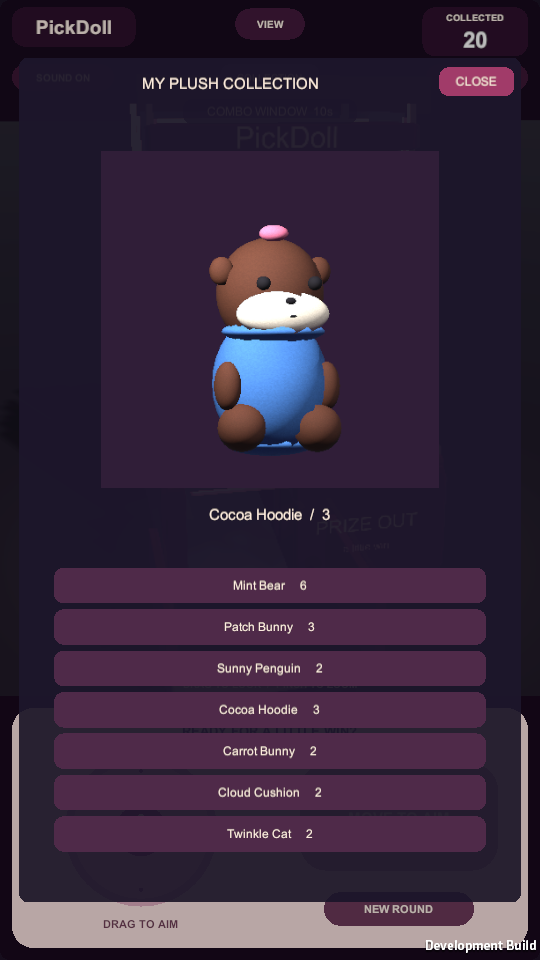
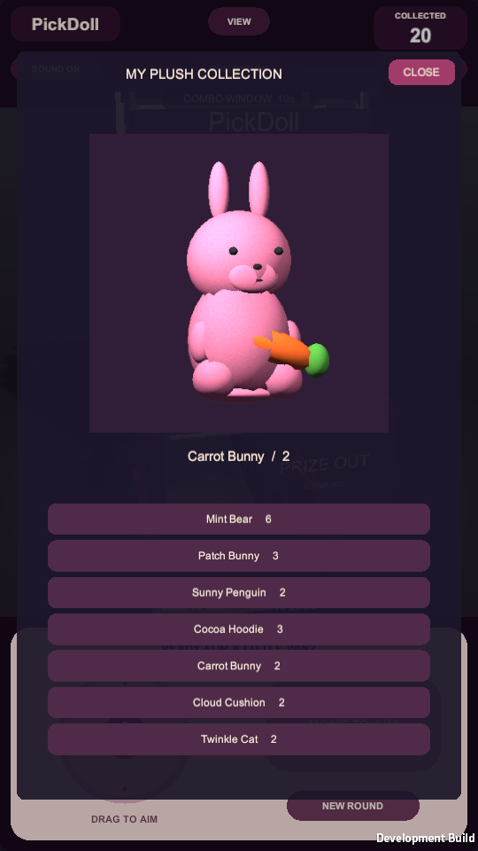
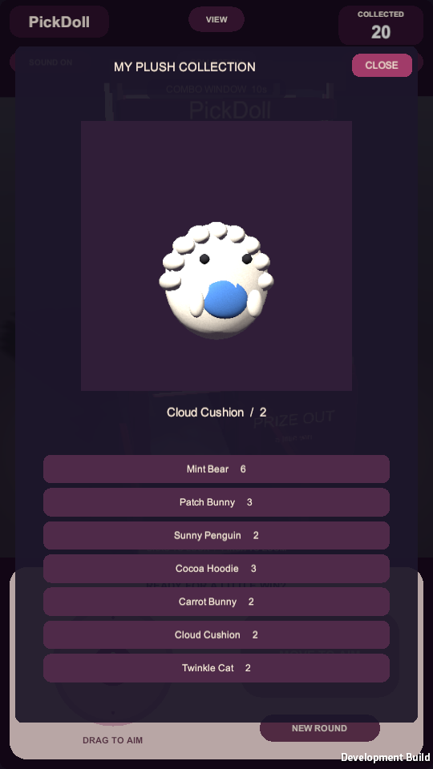
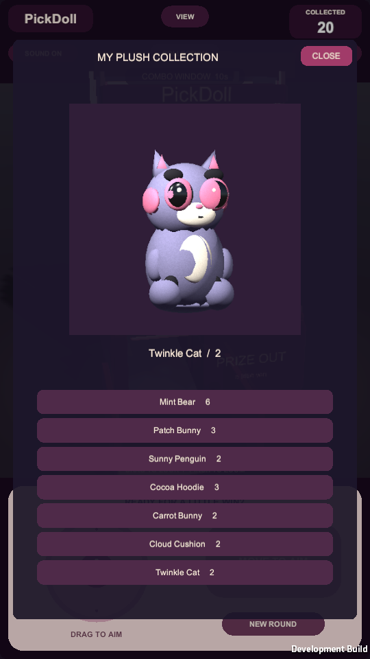
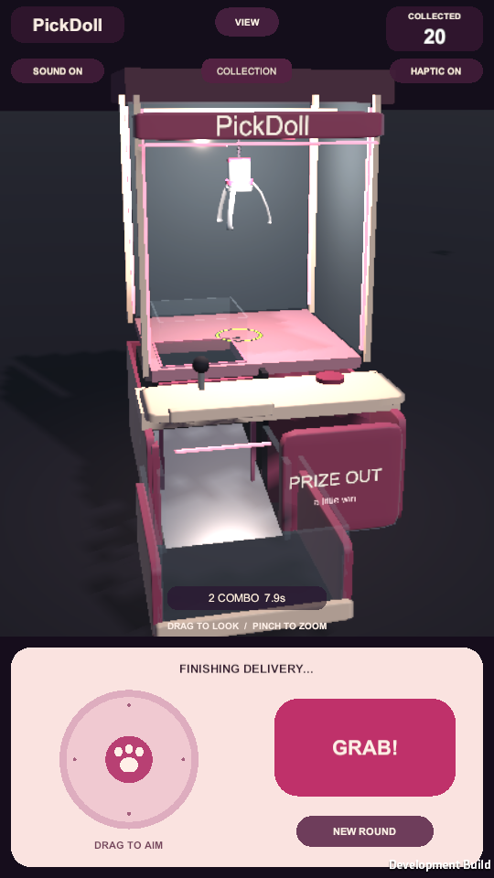
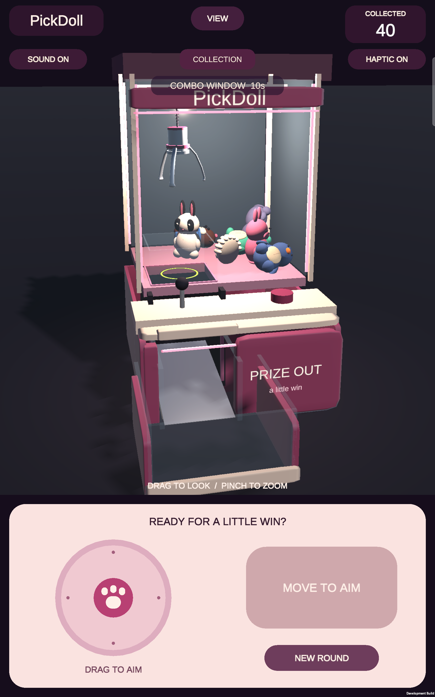
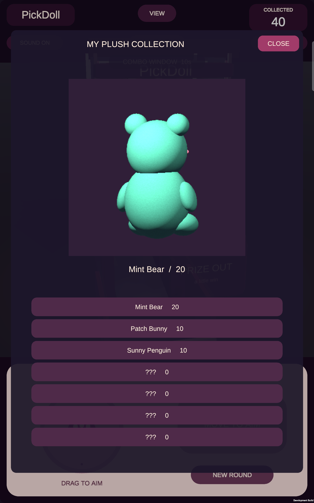
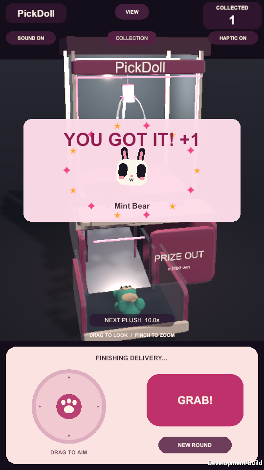
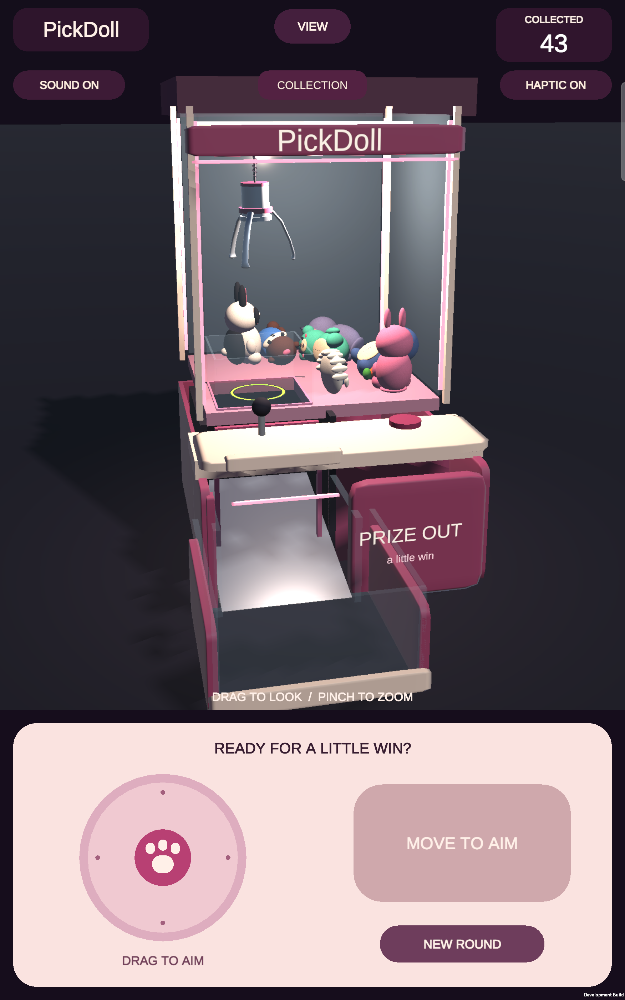

2026년 11월 26일 · 상태: 구현·PC 검증·탭 설치 완료 / 사용자 품평 대기
| 임시 이름 / 고정 ID | 형태·물리 |
|---|---|
| Cocoa Hoodie / hoodie_otter | 갈색 둥근 동물·파란 상의·흰 주둥이·머리 장식. 몸통·머리·발 충돌체, 90g. |
| Carrot Bunny / carrot_bunny | 분홍 큰 머리·긴 귀·짧은 몸과 당근 소품. 귀·당근 포함 충돌체, 90g. |
| Cloud Cushion / cream_cushion | 정면은 넓고 측면은 얇은 쿠션·봉제 테두리·파란 포켓. 얇은 상자 충돌체, 70g. |
| Twinkle Cat / patch_cat | 회색·분홍·검정 무늬와 큰 광택 눈·흰 주둥이와 가슴. 몸통·머리·발 충돌체, 90g. |
기존 곰·흑백 토끼·펭귄과 합쳐 7종, 한 판 7개를 유지한다. 신규 외형은 사진의 큰 형태·배색·소재를 참고한 자체 시안이며 상표·제품 태그·키링을 넣지 않는다. 원본 사진은 기존 로컬 참고 폴더에 보관한다. 최종 이름·미술 완성도는 실기기 품평에서 조정한다. 신규 동물에는 평평한 봉제 바닥면을 추가해 서 있는 상태를 유지하면서 누운 자세도 가능하도록 했다.
아래 수집 수는 자동 검사용 별도 임시 저장의 결과이며 실제 탭 기록과 분리돼 있다.




COLLECTION으로 열고 종류별 이름·수집 수를 확인한다. 미획득은 ???와 실루엣으로 표시하고, 선택한 모델을 드래그해 회전한다. 도감을 열면 물리 진행과 게임 입력을 일시 정지하고 닫으면 복원한다. 기존 collection-v1.json의 획득 ID·종류 ID를 유지하며 신규 ID를 추가한다. 저장 구조가 같아 불필요한 형식 변환 없이 기존 기록을 보존한다.
실제 저장에 성공한 획득 이벤트 사이가 10초 이내면 콤보를 이어간다. 매 획득마다 10초 갱신, 동시 획득 인정, 반복 접촉·중복 ID 제외. 카드 큐와 독립적으로 계산하며 수집 수는 실제 개수대로 유지한다. 작은 타이머와 성공 카드의 COMBO 표시를 제공한다. 새 판·앱 전환·재실행에서는 콤보만 종료한다. 도감을 보는 동안 물리는 정지하지만 콤보의 실시간 10초는 계속 흐르는 현재 동작도 품평한다. 점수 배율·추가 보상은 넣지 않는다.
10주차의 한 인형이 출구에 걸쳐 있었다는 보고를 유지한다. 바닥 접촉이 확인되지 않은 인형을 조기 집계하지 않는다. 후속 인형과 시간차로 바닥에 도착할 때 각 1회 저장·효과가 발생하는지, 신규 형태의 선 자세·누운 자세 배출을 검사한다. 검사에서 당근 토끼를 집어 운반한 뒤 출구 윗면과 경사로 사이에 걸리는 조건을 확인했다. 경사로를 낮추고 윗턱을 위로 조정해 통과 높이를 늘렸으며 실제 받침대 도착·카운트까지 최종 검사한다. 기존 사용자가 보고한 모든 걸림 상황이 해결됐다고 미리 판단하지 않고 탭 재확인을 기다린다.
Windows 통합 검사 PASS. 힘 변동을 끈 고정 검사 조건에서 7종의 선 자세·누운 자세 14조건 집기·운반·배출 성공. 쿠션형 선 자세는 45° 배치에서 중앙 조준이 실패했고, 가장자리 쪽으로 (.035, .035) 이동한 조준에서 성공했다. 이 결과는 모든 중앙 조준이나 실제 플레이 승률을 보장하는 수치가 아니다.
Android 0.11.0(code 13, ARM64, 최소 API 26) APK 빌드·v2 서명 검증 완료. 갤럭시 탭 SM-X820에 업데이트 설치·실행했고, 기존 기록 40개의 획득 ID·종류를 전후 비교해 누락 0건을 확인했다. 실제 터치로 도감 열기·모델 드래그 회전·닫기를 확인했다. 실제 성공 플레이·콤보 감각·출구 재시험과 미술 시안에 대한 사용자 품평은 대기 중이다. 기존 AssetPackManager 시작 로그는 재현되며 출시 전 조사 과제로 유지한다.



APK SHA256: a0b7d26c931cfef1e2b82a394c40516678180235b1671eeb03575486b98ad0eb
실제 플레이에서 기존 40개에 토끼·펭귄·당근 토끼 3개가 더해져 43개가 저장됐다. 뒤의 쿠션·곰·후드 동물·고양이는 출구 진입 로그만 있고 최종 배출은 확인되지 않았다. 사용자가 미끄럼대를 다 내려오지 못했다고 확인했으므로 누락 획득으로 소급 집계하지 않는다.
효과음 시안: 획득 → 콤보 → 보충.

0.11.1 PC 통합·세 화면 비율 검사, Android 빌드·서명 검증, 갤럭시 탭 업데이트 설치·실행 완료. 실제 플레이 재품평 대기. 위 0.11.0 검증 결과와 구분하며, 초기 연속 검사에서 토끼 지연을 관찰했으나, 누운 토끼의 긴 귀가 뒷벽 안에서 시작하는 검사 배치 오류도 확인했다. 충돌체 전체 중심으로 배치를 수정했으며, 실제 집어 위에서 놓는 통합 검사는 별도로 유지한다. 경사로 기울기를 약 6°에서 11°로 높이고, 통과 높이·폭을 늘리며 옆벽 마찰도 낮췄다. 수정된 통로에서 7종의 서기·눕기 14조건이 약 0.96~1.07초에 통과했다(에디터 중력 물리 검사이며 획득 이벤트 검사는 별도). 0.11.1의 폰 452×1158·폴드 906×1088·탭 876×1400 비율 모사 UI·도감 안전 영역 검사도 PASS. 수정 후 Windows 실행 통합 검사 PASS: 집기·운반·배출 14조건, 7개 연속 배출, 실제 최종 바닥 접촉 기준 7회 추가 집계, 배출된 모델 정리·새 모델 복구, 자동 보충 정확히 1회, 보충 알림의 추가 획득·중복 보충 없음, SOUND OFF 연동과 최종 별도 검사 저장 27건을 확인했다. 쿠션형 선 자세는 기존처럼 가장자리 조준으로 성공했으며 모든 중앙 조준의 성공률을 뜻하지 않는다. 갤럭시 탭 SM-X820에서 설치된 버전 0.11.1(code 14)과 실행 화면을 확인했다. 설치 직전·직후 저장의 43개 획득 ID·종류가 모두 일치하며 누락 0건이다. 초기화 시 새 런타임 오류는 없고 기존 AssetPackManager 시작 로그는 계속 남는다. 실제 탭의 새 배출 흐름·성공/콤보 효과·사운드·자동 보충 감각은 사용자 재품평을 기다린다.

0.11.1(code 14) APK: ARM64, 최소 API 26, 대상 API 36, v2 서명 검증 통과. SHA256:3ef1db8b14f319bb395413a677931510946dbba1f762e202343a553b1148acaa.